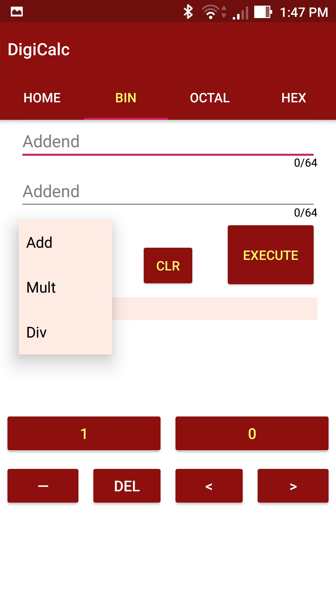
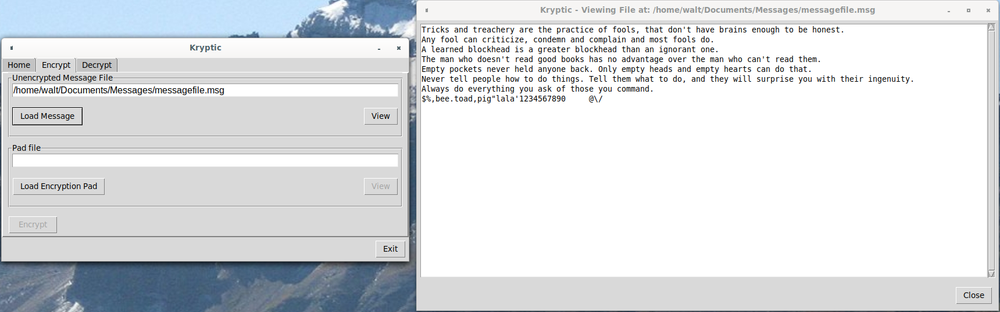
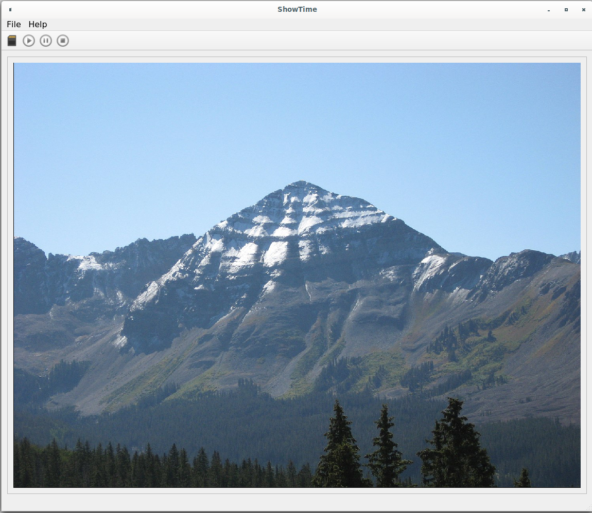

My Projects
Ease is a greater threat to progress than hardship.
-
Programming Portfolio
This web site. This is not a downloaded template. It was written with a text editor and uses JQuery.
-
MyClassicCar
An Android app for classic car owner. Its star feature is storing part numbers for difficult to locate parts. I have found with my oun
classic car that sometimes Parts Stores won't have a listing for a part I'm looking for. However, they were able to look up the part from a part
number that I provided them. This application also tracks oil changes, maintenance and repairs.
The opening scene uses Android's ListView for a list of cars. Most people typically don't have more than two or three cars, so using this element works fine. The lists for
parts, maintenance, and oil changes makes use of the RecyclerView, as there could be, over time, hundreds of listings. RecyclerView "recycles"
a list cell once it is no longer in view, saving on device memory usage. The RecyclerView's onClockListener is implemented with an Interface; which is the community
excepted "Best Way Practice" of implementation.
Other Android elements include dropdown menu on the toolbar, proper Back Navigation, Spinners, Buttons, and several others.
Data is persisted with the SQLite relational database management system. SQLite is used as it is the standard database for an android device and is
already installed. SQLite is very likely used by several other apps.
Available now on Google Play.
-
DigiCalc
An Android app that calculates 64 bit binary, octal and hexadecimal values. The idea for this app came while furthering my studies of computer architecture.
This app makes zero use of Java's BigInteger or BigDecimal classes.
The foundation of this app are the properly working addition methods for binary, octal and
hexadecimal calculations. Equally as important are the methods for the 2s-complement converters for each base type. Subtraction is performed first by tapping the desired base
value and then tapping minus sign on the keypad. This places a minus sign at the beginning of the base value. Tapping the minus key again removes it.
If there is a minus sign at the beginning of one or both values, a 2s-compliment addition is performed.
Multiplication and division are merely extensions of addition and subtraction.
The Android elements used in this app are tabs involving Fragments. Fragments are used to insert the custom keypads onto each base type tabs to enter values.
Communication between the Fragment keypads and fields in the containing layout is performed by the ViewModel class. This implementation is much simpler
than an implementation involving an Interface.
There are alternate layouts for when the device is rotated; using the exact same keypad layouts. There is also layouts for tablets, again using the same keypad layouts.
Available now on Google Play.
View the code at the DigiCalc GitHub repo.
-
Kryptic
A Python 3 and TkInter program that performs the asynchronous One-Time-Pad encryption. The text to be encrypted and the "Pad" are both read in from files.
The main part of the process is emulated with a singly circular linked list. Go to the GitHub repository (link below) for details on the One-Time-Pad encryption process.
View the code at the Kryptic Github repo.
-
ShowTime
A Slideshow program program written in C++ with a Qt user interface. This is my
first time using Qt taking approximately 2 weeks to write.
The heart of the program is the QThread in combination with a signal-and-slot. The thread contains an object that receives a QStringList of filenames. The internal slot,
which starts automatically upon instantiation of the class, extracts a single filename from the QStringList and emits it back to the parent thread and then 'pauses' for 5
seconds — QThread::msleep(x).
The signal-and-slot in the parent thread takes the filename as soon as it receives it and inserts it into the QLabel, which is the Qt element that
displays photos.
Three additional variables are passed into the object contained within the thread. One is to adjust the delay time which is currently
hard coded in the parent thread. One passes in a value to create a pause when the pause button is clicked as Qthreads do not have a "pause".
The remaining variable passes one of four states when the "Start", "Stop" or "Select Directory" buttons are clicked or the program is terminated:
- 0 (zero) is set when the "Start" button is clicked and the thread with an object containing a signal-and-slot is created.
- 1 is set. This terminates the thread when the application exiting. Cleanly exits the program.
- 2 is set when the "Stop" button is clicked. This a modified 'pause' and results in the resetting the QStringList back to the beginning.
- 3 is set when the "Select Directory" button is clicked. This is also a modified 'pause' except it clears the QStringList and then
reloads it with a new list of filtered filenames gathered from the newly selected directory.
All four passed in values are pointers.
View the code at the ShowTime GitHub repo.
{kind=link}
{kind=link}
{kind=link}
{kind=link}